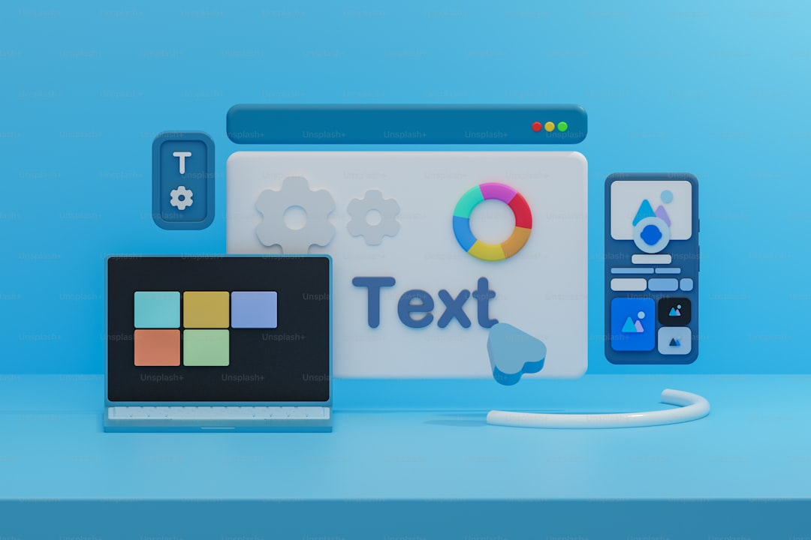

应用推荐https://www.photopea.com 在线即用的应急图像处理（ psOBS Studio（開源录屏软件） Blender（開源视频剪辑，建模渲染合成軟件）Inkscape（開源矢量图制作软件）recuva（数据恢复）Snipaste 火絨（個人免費杀毒软件）WorkFlowy（信息梳理）Inoreader（一個網站訂閲掉你每天要登陸的信息獲取網站，何樂而不爲呢？） Fliqlo - Screensavereverything iPerf - The TCP, UDP and SCTP network bandwidth measurement tool MouseInc typora